Optimizing policies with thresholds in neuroscience
Ben Lansdell, Bioengineering UPenn
A basic problem
What is the effect of our actions, and how can we act to maximize utility?
In part, a causal inference problem
In some cases effects of actions are confounded
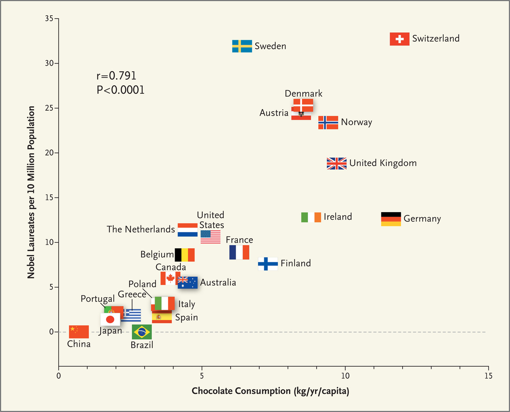
Messerli, N Engl J Med 2012
Explore in two problems:
Learning in neural networks with the spiking threshold
Optimizing threshold policies
Neural learning
What is a neuron's effect on output, and how should it change to improve?
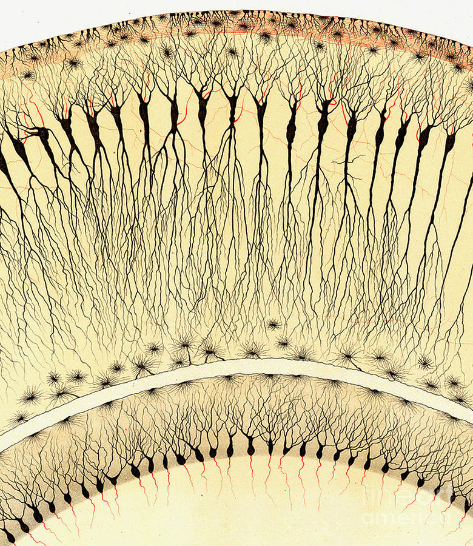
Golgi 1885
Neural learning
What is a neuron's effect on output, and how should it change to improve?
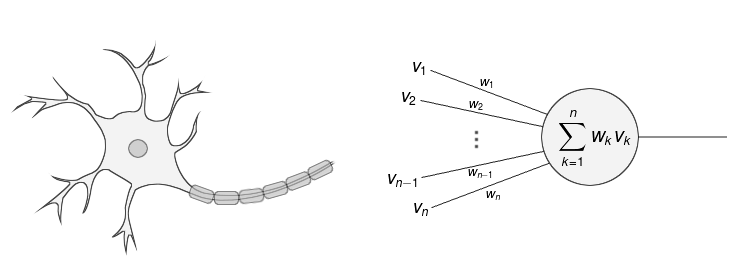
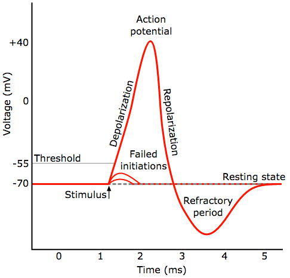
credit: Chris 73/Diberri CC
Neurons spike when inputs place them above a threshold
Learning involves changing synaptic weights $w$ to improve performance/utility/reward $R$
Neural learning
What is a neuron's effect on output, and how should it change to improve?
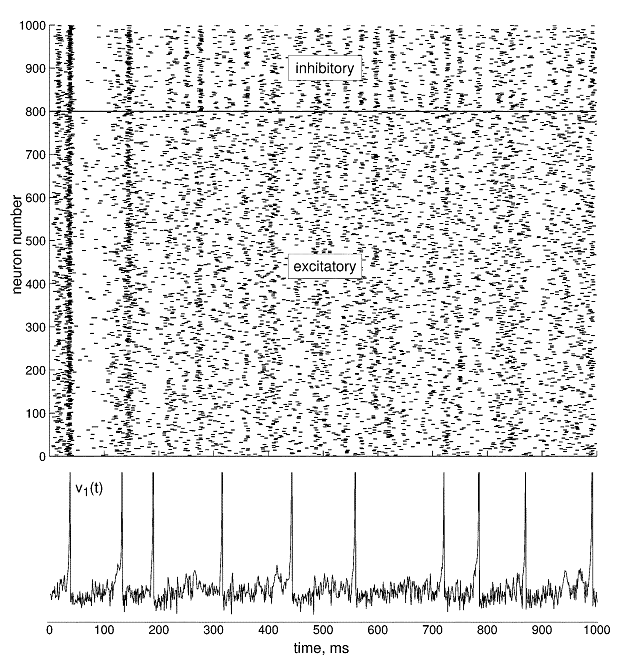
Neural learning
What is a neuron's effect on output, and how should it change to improve?
One mm${}^3$ of cortex contains:
50,000 neurons
each with ~6000 synapses with neighboring cells
in some parts feedforward, in some parts recurrent connections
The credit assignment problem
Formalized
Inputs $\mathbf{x}, \mathbf{y}$, network output $\hat{\mathbf{y}} = f(\mathbf{x})$, weights $\mathbf{w}$.
Aim to minimize a loss function: $\mathbb{E}(R;\mathbf{w})$
Gradient descent-based updates: $\Delta w \propto g\left(\frac{\partial R}{\partial w}\right) = g\left(\frac{\partial R}{\partial h^i} \frac{\partial h^i}{\partial w}\right)$
How does a neuron know $\frac{\partial R}{\partial \mathbf{h}}$?
The artificial neural network solution
The backpropagation algorithm efficiently computes gradients
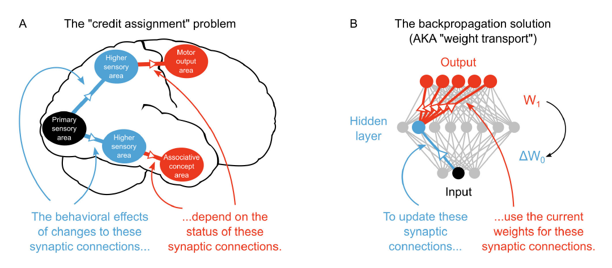
Guergiuev et al eLife 2017
Recursively compute:
$$
\mathbf{e}^i = \begin{cases} \partial R/\partial \hat{\mathbf{y}}\circ \sigma'(W^{i}\mathbf{h}^{i-1}), & i = N+1;\\
\left((W^{i+1})^T \mathbf{e}^{i+1}\right)\circ \sigma'(W^{i}\mathbf{h}^{i-1}), & 1 \le i \le N.
\end{cases}
$$
Then $\frac{\partial R}{\partial \mathbf{h}^i} = (W^{i+1})^T \mathbf{e}^{i+1}$
Relies on the feedback network knowing $(W^i)^T$
No such structure known to exist in the brain
A more realistic solution
Reinforcement learning algorithms can learn to maximize reward in this setting
The REINFORCE algorithm correlates reward with a noisy pertubation in activity:
$$
\mathbb{E}(\tilde{R}\xi^i) \approx \frac{\partial R}{\partial h^i}
$$
Requires each neuron measures an IID noise source, $\xi^i$, or somehow knows its output relative to some hypothetical expected output.
No satisfactory answer to the credit assignment problem
No structure to do anything like backprop
RL approaches rely on a neuron having an independent noise source
This is challenging: there are many sources of correlations in neural activity
Viewing learning as a causal inference problem may provide insight.
Causality
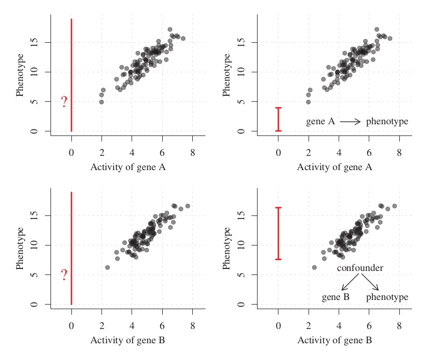
Peters et al 2017
Defined in terms of counterfactuals or interventions
The causal effect: $\beta = \mathbb{E}(P|A\leftarrow 1) - \mathbb{E}(P|A\leftarrow 0)$
How can we predict the causal effect from observation?
An observation
Decisions made with arbitary thresholds let us observe counterfactuals
Adapted from Moscoe et al, J Clin Epid 2015
Known as regression discontinuity design (RDD) in economics
Two observations:
A neuron only spikes if its input is above a threshold
A spike can have a measurable effect on outcome and reward
Suggests regression discontinuity design can be used by a neuron to estimate its causal effect.
RDD as a way for a neuron to solve credit assignment
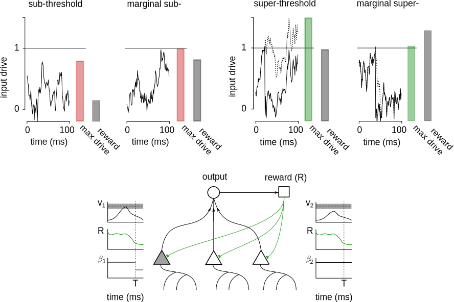
Lansdell and Kording, bioRxiv 2019
RDD as a way for a neuron to solve credit assignment
Inputs that place the neuron close to threshold are unbiased estimate of causal effect
Estimate piece-wise linear model: $$R = \gamma_i + \beta_i H_i + [\alpha_{ri} H_i + \alpha_{li}(1-H_i)](Z_i - \mu)$$
Can operate with correlated noise sources, no need to measure an independent noise source
Demonstration on a 2 neuron network
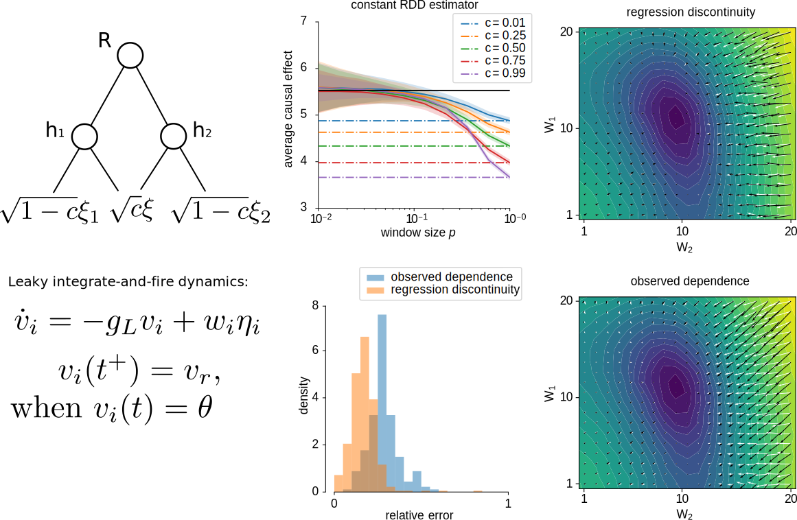
Demonstration on a 2 neuron network
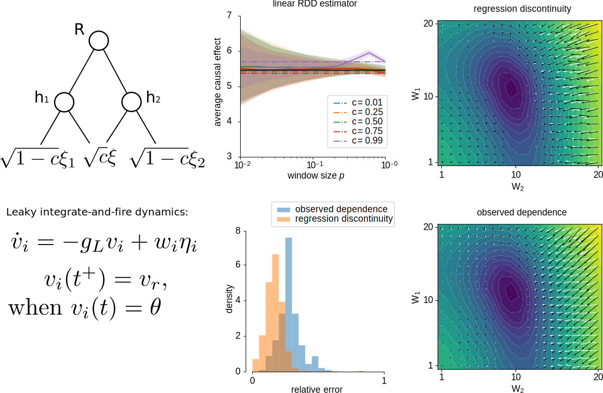
Using $\beta$ to update weights
Under the assumptions:
Parameters only affect the reward through neuron's spiking activity, meaning $\mathbb{E}(R|H)$ is independent of parameters $\mathbf{w}$.
The gradient term $\frac{\partial \mathbb{E}(H_i|H_{j\ne i})}{\partial w_i}$ is independent of $H_{j\ne i}$.
Neurons $H_{j\ne i}$ satisfy the backdoor criterion with respect to $H_i \to R$.
Then:
$$
\frac{\partial R}{\partial w^i_j} \approx \frac{\partial H^i}{\partial w^i_j} \beta^i
$$
Caveat: Operates over timescales where a spike matters and feedback can be provided (< ~10Hz)
Learning on a 2 neuron network
Learning rule:
$$
\Delta \mathbf{u}_i = \begin{cases}
-\eta [\mathbf{u}_i^T\mathbf{a}_i - R]\mathbf{a}_i,& \theta \le Z_i < \theta + p \text{ (just spikes)};\\
-\eta [\mathbf{u}_i^T\mathbf{a}_i + R]\mathbf{a}_i,& \theta -p < Z_i < \theta \text{ (almost spikes)},
\end{cases}
$$
Learning trajectories are less biased and converge faster
Application to brain-computer interface learning
Subjects can be trained to control activity of individual primary motor cortex neurons
Can be done just as well for neurons involved in wrist-control, even when performing wrist movements
How does the network change specifically the control neuron's activity?
Training during wrist motion introduces confounds -- must solve causal inference problem
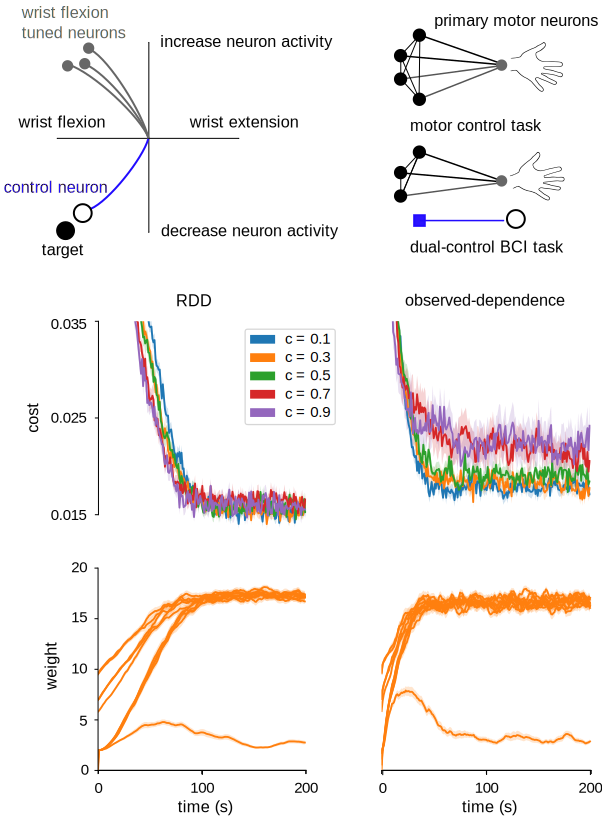
Part 1 summary
RDD can be used to estimate causal effects, and can provide a plausible solution to the credit assignment problem in neural networks
Relies on the fact that neurons spike when input exceeds a threshold -- spiking is a feature not a bug
Consistent with neurophysiology, and makes some novel predictions (see bioRxiv article for details)
Need to test in larger/deeper neural networks
Explore in two problems:
Learning in neural networks with the spiking threshold
Optimizing threshold policies
Many medical decisions are made by thresholding
For example:
Statins with high cholesterol
Treatment for hypertension based on blood pressure cutoff
Surgery for scoliosis when spinal curvative exceeds cutoff
Size cutoff for mole excision
Assumption 1: those above (below) some threshold benefit and those below (resp. above) do not
RDD can be used to measure causal effects
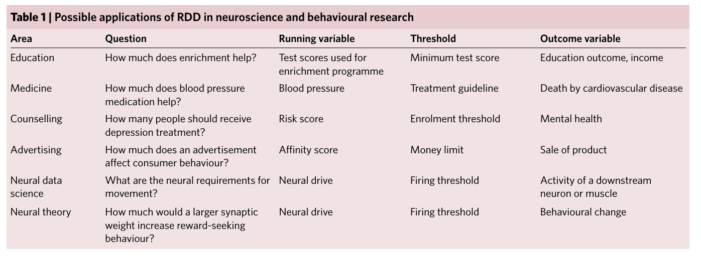
Marinescu et al 2018
Under-utilized in medicine:
RCTs may be challenging, problems with external validity
Large amounts of available data
Adaptive thresholds
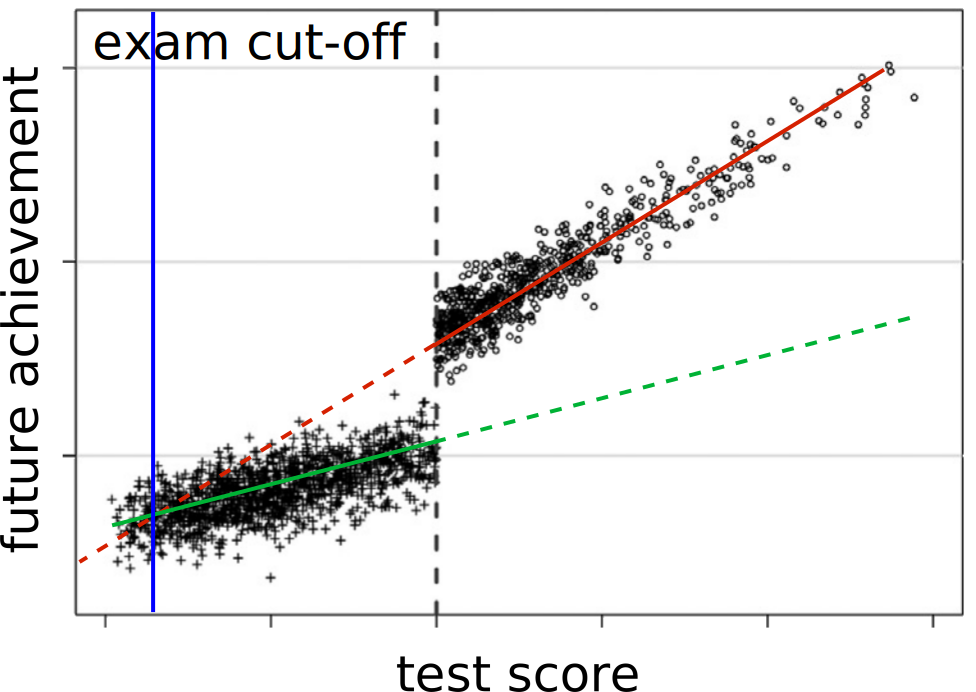
Want to both learn effects and maximize utility
Some considerations
When treatment is already implemented, may not be possible to conduct an RCT
Want to learn the optimal threshold quickly
Don't want to experiment excessively
Don't want to change policy excessively
How can these be balanced?
Multi-armed bandits
Choose from a set of actions at each round
Only observe reward for action chosen
How to allocate time exploring new options vs exploiting current best option?
Originally developed as a model for adaptive clinical trials
Also used for:
Personalized medicine
Website A/B testing
Routing problems, portfolio construction
Can use bandit theory to study threshold optimization algorithms
Contextual multi-armed bandits
$T$ rounds in a trial
For each $t\in[1,T]$:
Observe $s_t\in\mathcal{D}\subset\mathbb{R}^d$, choose action $a_t \in \mathcal{A}, |\mathcal{A}| = k$
Observe reward $y_t$ Aim to maximze reward:
$$
\mathcal{Y}_T = \sum^T_{t=1}\mathbb{E}(y_t)
$$
Same as minimizing regret:
$$
R_T = \sum^T_{t=1}\mu^{*}(s_t) - \mu^{a_t}(s_t)
$$
Basic question: asymptotic behavior of regret with $T$.
"Threshold" policies
Assumption 2: linear contextual bandit
$$
y_t = s_t \theta^{a_t} + \eta_t
$$
The optimal policy takes the form:
$$
a_t^* = \pi^*(s_t) = \text{argmax}_a s_t \theta^{a},
$$
Consider a family of policies parameterized in the same way:
$$
a_t = \pi(s_t) = \text{argmax}_a s_t \tilde{\theta}^{a}_t,
$$
for parameters $\tilde{\theta}^a_t$.
Implicitly defines piece-wise linear decision boundaries.
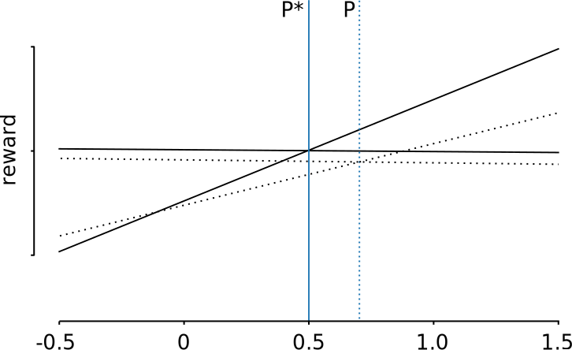
Optimizing threshold policies
How to update $\{\tilde{\theta}^a_t\}$ to balance considerations?Idea: only update $\{\tilde{\theta}^a_t\}$ when justified
Maintain estimates of payoff of each arm:
$$
\begin{align*}
V_t^a &= \lambda I + \sum_{s\in T_t^a} \mathbf{s}_s\mathbf{s}_s^T,\quad
\hat{\theta}_t^a = V_t^a(\lambda)^{-1}\sum_{s\in T_t^a}y_s\mathbf{s}_s,
\end{align*}
$$
Define a confidence set in which $\theta$ plausibily lies:
$$
\mathcal{C}_t^a = \{\mathbf{x}\in\mathbb{R}^d:\|\hat{\theta}^a_{t-1} - \mathbf{x} \|^2_{V_{t-1}^a} \le \beta_t^a\}
$$
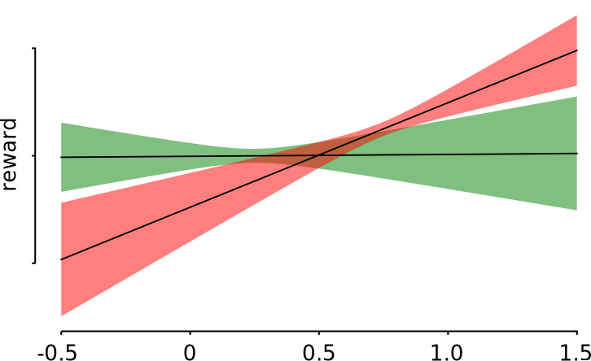
Optimizing threshold policies
Theorem: A threshold algorithm that maintains $\{\tilde{\theta}^a\}\in\mathcal{C}_t^a \forall t$ has expected regret:
$$
R_T \le C\sqrt{T\log(TL)}
$$
for constant $C>0$ and for $\|\theta\| \le L$.
The greedy algorithm ($\tilde{\theta}^a_t = \hat{\theta}^a_t$) and LinUCB satisfy the same bound
Caveat: This does not prove sub-linear regret almost surely
Optimizing threshold policies
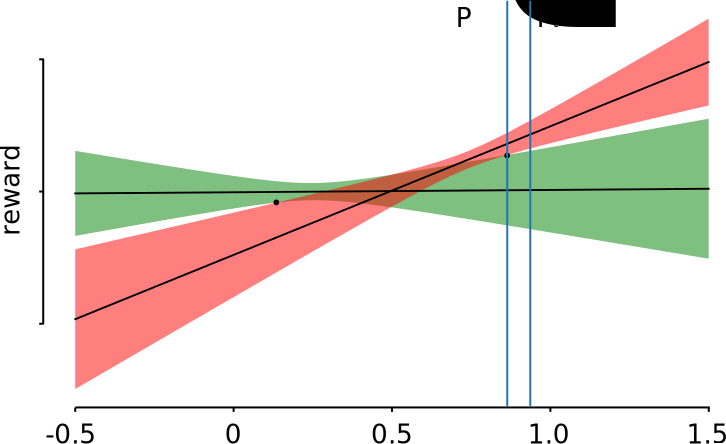
Consideration 3: "don't experiment excessively"
$$
\tilde{\theta}^a_{t+1} = \text{Proj}_{\mathcal{C}_{t+1}^a}(\tilde{\theta}^a_{t})
$$
Threshold conservative
Optimizing threshold policies
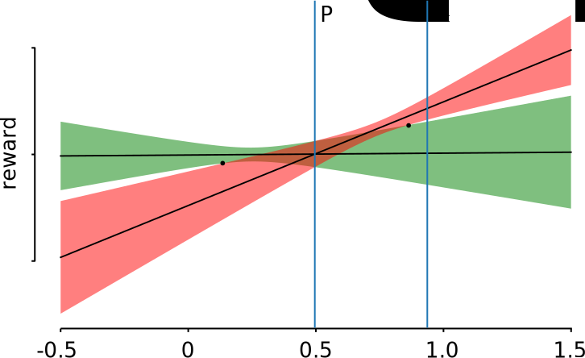
Consideration 4: "don't change policy excessively"
$$
\tilde{\theta}^a_{t+1} = \begin{cases}
\tilde{\theta}^a_{t}, & \tilde{\theta}^a_{t} \in\mathcal{C}_{t+1}^a \\
\hat{\theta}^a_t, & \text{else}.
\end{cases}
$$
Threshold greedy
Performance in simulations
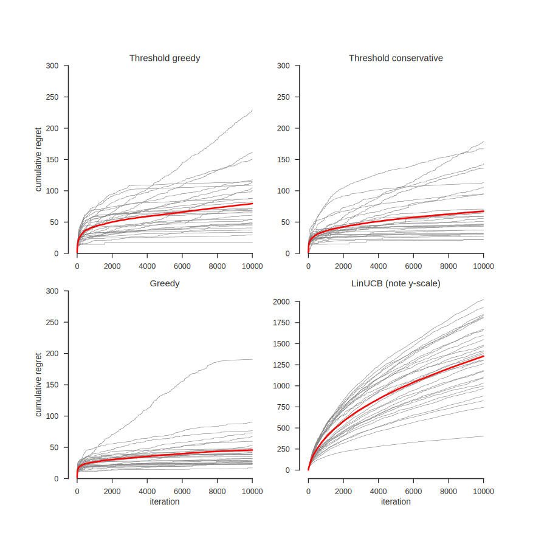
Performance in simulations
Summary of Part 2
Assuming linearity, we can understand and construct algorithms that efficiently learn optimal thresholds with significantly fewer changes to policy
A simple model of how many policy decisions are made in medicine
Can extend to non-linear models
Acknowledgments
Konrad Kording
Kording lab
Ari Benjamin
David Rolnick
Roozbeh Farhoodi
Sofia Triantafillou (Pitt)
Is this realistic?
Consistent with:
current models of sub-threshold dependent plasticity
current models of neuromodulator dependent plasticity
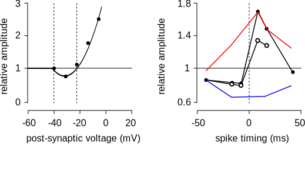
Additionally would predict super-threshold dependent plasticity
How to test?
Over a fixed time window a reward is administered when neuron spikes
Stimuli are identified which place the neuron's input drive close to spiking threshold.
RDD-based learning predicts an increase synaptic changes for a set of stimuli containing a high proportion of near threshold inputs, but that keeps overall firing rate constant.
Conservative contextual multi-armed bandits
Recent work on learning while being:
Risk-averse -- avoid highly varying outcomes: Conservative -- only change policy if will improve outcome with certain confidence: Greedy -- only act to maximize reward given current knowledge, no exploration:
Recent empircal comparison (Bietti et al 2018) showed greedy algorithms perform well. Suggests threshold policies with minimal exploration may perform well
Optimizing threshold policies
Let $\mathcal{E}_t$ be the event:
$$
\mathcal{E}_t = \cap_{n = 1}^t\{\theta \in \mathcal{C}_n\}.
$$
Theorem: [Lattimore 2018. Thm 20.2] For any $\delta \in (0,1)$, with probability at least $1-\delta$, it holds that for all $t\in \mathbb{N}_+$,
$$
\|\hat{\theta} - \theta\|_{V_t^a} < \sqrt{\lambda}\|\theta\| + \sqrt{2\log\left(\frac{1}{\delta}\right) + \log\left(\frac{\det V_t^a}{\lambda^d}\right)}.
$$
Also, for $\|\theta\| \le L$ then $\mathbb{P}(\mathcal{E}_t) \ge 1-\delta$ with $\mathcal{C}_t^a$ defined using
$$
\beta_t^a = \sqrt{\lambda}L + \sqrt{2\log\left(\frac{1}{\delta}\right) + \log\left(\frac{\det V_t^a}{\lambda^d}\right)}.
$$
Optimizing threshold policies
Call any algorithm which always plays the unambiguously better arm for any context in which there is one a feasible algorithm
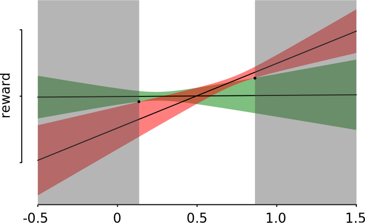
Optimizing threshold policies
Theorem:
With probability at least $1-\delta$, the (pseudo-)regret of any policy learned by a feasible algorithm is bounded by
$$
\hat{R}_T \le \sqrt{8dT\beta_T\log\left(\frac{\text{trace}(V_0) + TL^2}{d\det^{1/d}(V_0)}\right)}.
$$
Corollary: Choosing $\delta = 1/T$, the expected regret obeys
$$
R_T \le Cd\sqrt{T}\log(TL),
$$
for constant $C > 0$ and $L$.
Optimizing threshold policies
A threshold algorithm that maintains $\{\tilde{\theta}^a\}\in\mathcal{C}_t^a \forall t$ is a feasible algorithm.
Thus $\mathcal{O}(\sqrt{T\log(T)})$ expected regret
The greedy algorithm ($\tilde{\theta}^a_t = \hat{\theta}^a_t$) and LinUCB are also feasible algorithms
Caveat: This does not prove sub-linear regret almost surely